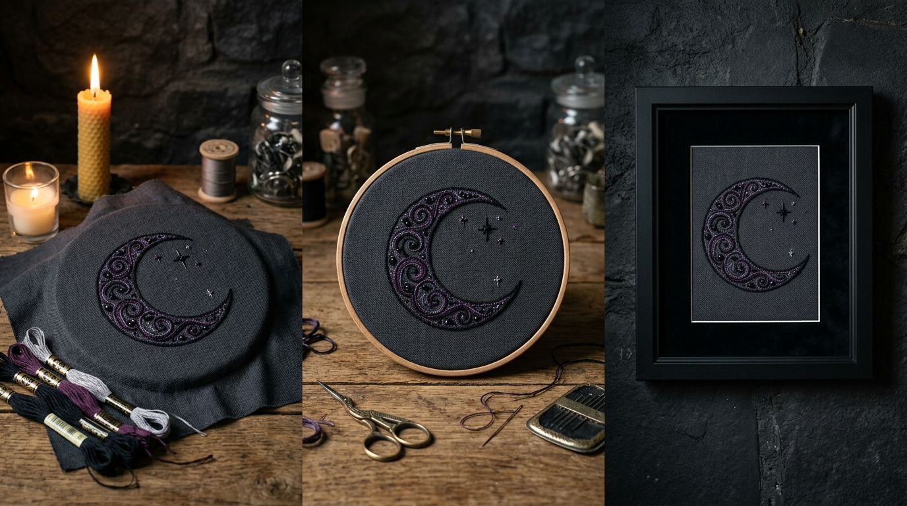
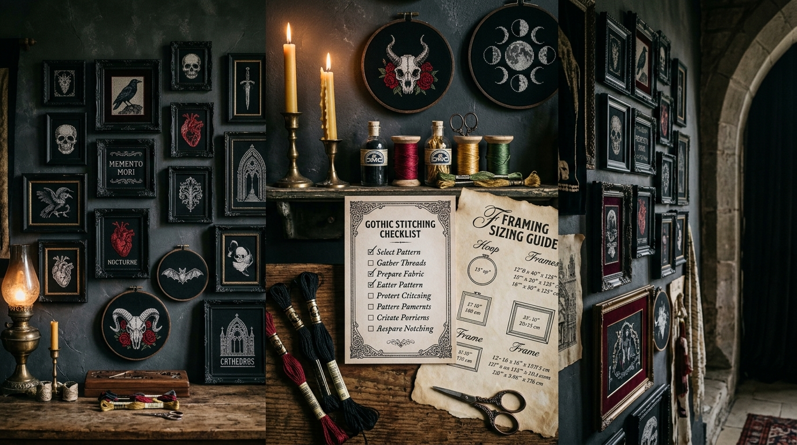

Descubra como finalizar, tensionar, montar e apresentar seus bordados em bastidores e molduras com acabamento bonito, elegante e profissional.
Transforme seus bordados em peças bonitas, bem acabadas e prontas para decorar.

Depois de terminar o bordado ainda existe uma etapa que muda completamente o resultado: a finalização.
Um mesmo bordado pode parecer improvisado, torto, frouxo e inacabado... ou pode virar uma peça linda, perfeitamente tensionada e pronta para a parede.
Isso depende exclusivamente do acabamento.
Bordado terminado com dedicação, mas ainda sem apresentação, amassado e guardado na gaveta.
Tecido tensionado, perfeitamente centralizado e com acabamento traseiro limpo em feltro.
Peça emoldurada em madeira nobre, protegida por vidro e pronta para decorar a parede.
Evite a insegurança de não saber como finalizar:
Perfeito para projetos pequenos e médios com visual artesanal refinado.
Ótimo para pequenos detalhes, símbolos lunares e mini gráficos góticos.
Ideal para peças maiores, catedrais, retratos e projetos detalhados.
Dois projetos coordenados que se completam na decoração.
Três pequenos projetos temáticos que conversam entre si.
Bordado finalizado com perfeição, embalado e pronto para encantar.
✦ Você não precisa bordar melhor. Precisa aprender a finalizar melhor.

Para escolher a proporção ideal entre o bordado e a moldura.
Passo a passo visual antes de considerar uma peça pronta.
Sugestões de estilos, proporções, vidros e combinações.
Exemplos para duos, trios e pequenas galerias de parede.
Como guardar, proteger contra umidade e preservar os fios.
Ideias simples e elegantes para presentear ou armazenar.
Mesmo que você nunca queira vender um único bordado, este material foi criado para quem quer olhar para um projeto terminado e sentir:
Você não precisa ter experiência prévia. O método começa do absoluto básico: preparar o tecido, centralizar, tensionar, finalizar o bastidor, escolher a moldura certa e montar sem complicação. Tudo passo a passo.
O método completo para finalizar e emoldurar seus bordados.
Aprenda a transformar seus projetos em peças acabadas, bonitas e prontas para decorar.